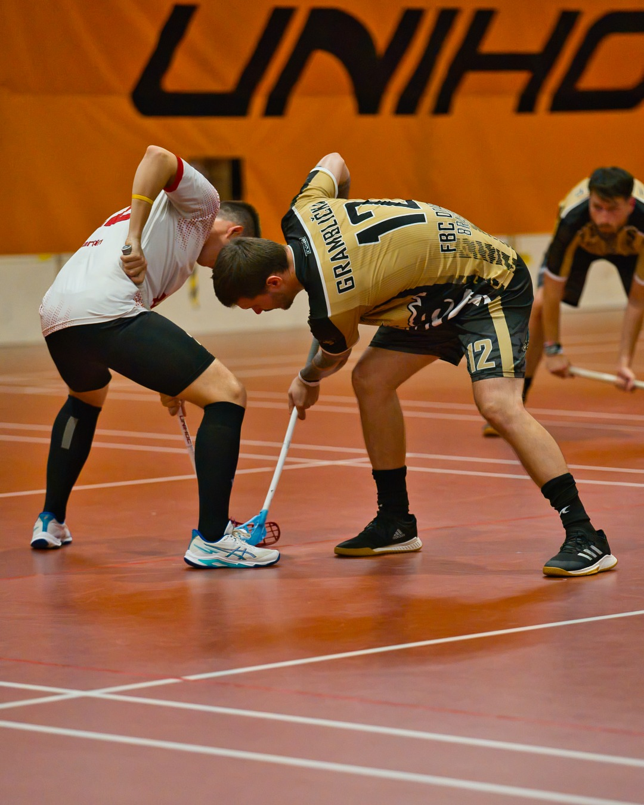
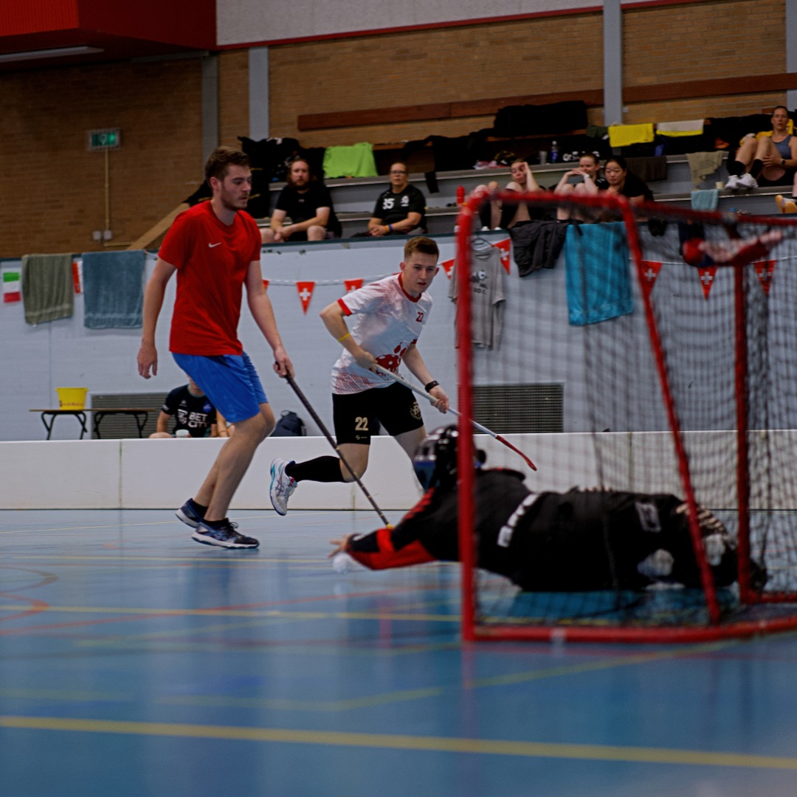
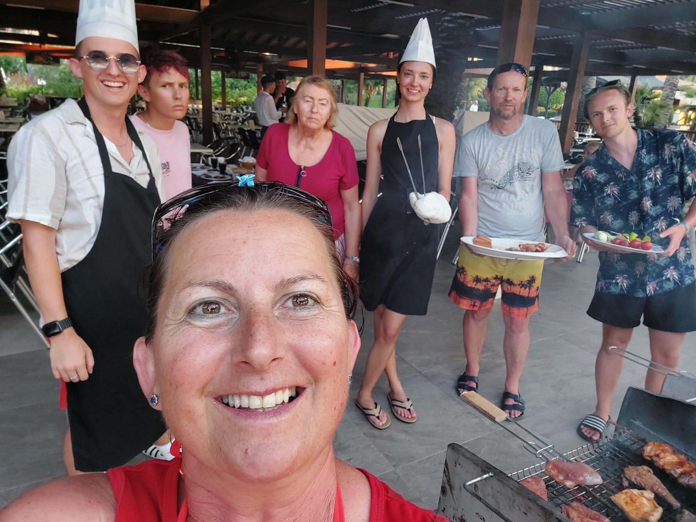
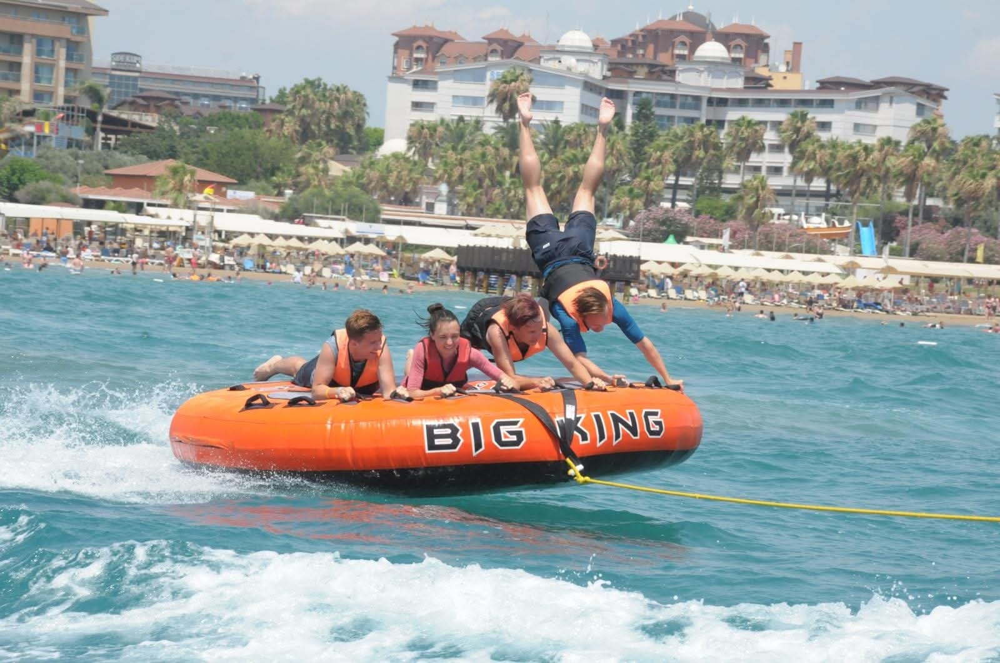

It seems my post frequency is going to be very low. I realized I am treating this more like a digital diary, rather than a regular blog. That is quite alright with me however, since I do not feel any pressure to do it when I am busy, and I can then post a summary of my recent life here.
So, what have I been up to? A lot has changed since April. I have actually found a job! Its very cool and I truly enjoy what it entails. I have been so worried about finding any job at all in IT, but in the end, I actually got the job I wanted, a job in computer security. I truly enjoy it, and hope to start my career in this direction in the future. I am also writing this one day after my last exam, which I will hopefully pass. After that I have got just a couple more courses and my bachelor’s thesis. I am really pumped about this progress and will also try to take some master’s courses at the same time as well, since I have some spare time. Those will help me to hopefully compete my masters in just three semesters or at least give me more time to get even more practical experience through expanding my work. So, in this way things are really on the up.
I have also been very active in floorball over the summer, partaking in international tournaments in the Netherladns, Czechia and Slovakia. Two weeks ago, our leagues started as well, we are currently top of the table in the 3v3 league, so fingers crossed :D. In the 5v5 we also started the season with a win, and I hope that we might hold our own there too.
I also travelled a lot in the recent months. We were on a family holiday in Turkey which was a lot of fun. As I always do with these, I came home completely exhausted, but feeling like I enjoyed every second of it. I spent a lot of time in my home country of Slovakia enjoying family time and recovering from a couple of small injuries from the tournaments. I won’t bore you (assuming there is at least one person reading this) with more detail so enjoy some photos from the summer!
Btw I know this hasn’t been very bloggy so far, more like me reciting what I did recently, but believe me next time I am thinking of posting some of my random thoughts so that will surely be fun :D.
ARIVEDERCI



